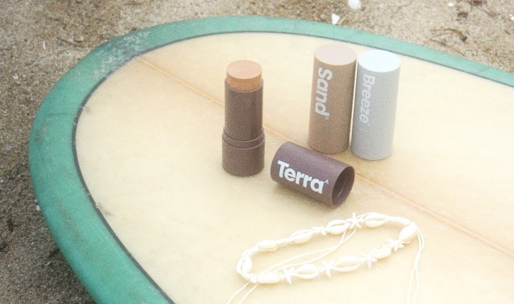
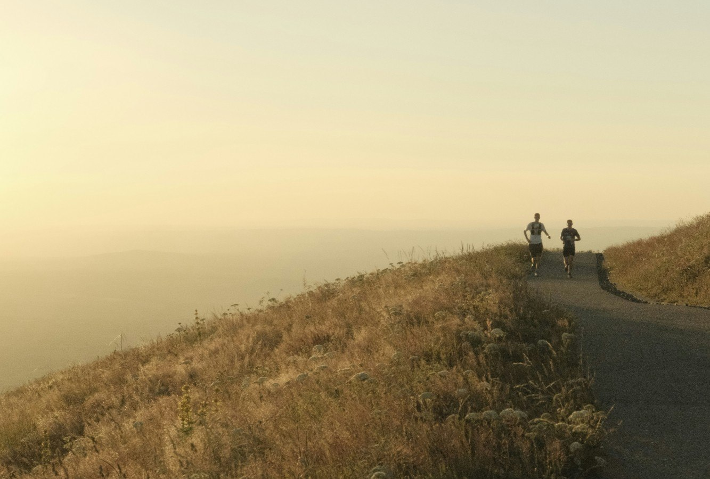

Some brands are born in meeting rooms. Others are born by the sea. ANYARVO is the latter. In 2018, before the name ANYARVO existed, there was a sun stick, in blue and in orange, known as the AA Sun Stick. It was refined in the hands of the people who meet the sun most directly, and for the longest part of the day: surfers.
This small stick spread not through advertising, but by word of mouth. Over two to three years, more than 100 surfers put it to the test on the water, asking whether it would hold against sweat and salt, and whether it would still protect their skin in rough surf. The 5,000-plus reviews that followed did not stay at home. Word crossed the ocean and reached the surf community in Hawaii, home to some of the world's most discerning surfers. An unknown sun stick from Korea was recognized first by surfers half a world away, who began seeking it out.

A well-loved product always invites the next question: could we share this with more people, in an even better form? In June 2026, ANYARVO was born as the answer. The first reason for this rebirth is expansion. We believed that protection proven in surfing, where UV exposure is at its most extreme, would serve anyone who spends the day outside, whether running, hiking, camping or playing golf. ANYARVO has widened the surfer's sun stick into sun care for everyone who lives outdoors.
The second reason runs a little deeper. A brand born by the sea, we felt, should be made in a way that protects that sea. Drawing on the technical craft of K-beauty, which the world has come to trust, ANYARVO refined its formulas to be gentler still. They are gentle on skin and, when washed off into the ocean, lighter on marine ecosystems, in a reef-friendly direction. So that the sea we love is never spoiled by our own hands.

That is why ANYARVO calls itself not cosmetics, but gear. Like a surfboard or a wetsuit, it is the tool you never leave behind when you want to stay outside longer and go farther. "Arvo," in our name, is how Australians say "afternoon." The hour when the sun is at its brightest is, to us, not a threat to avoid but a stage to enjoy fully. Sun care is the smallest, surest piece of preparation behind that freedom.
The ANYARVO Journal begins from this very attitude. It is a place to record, one story at a time, how a brand that began by the sea found its way to everyone's outdoors, along with the stories of people who live under the sun.
Keep on the sunny side.